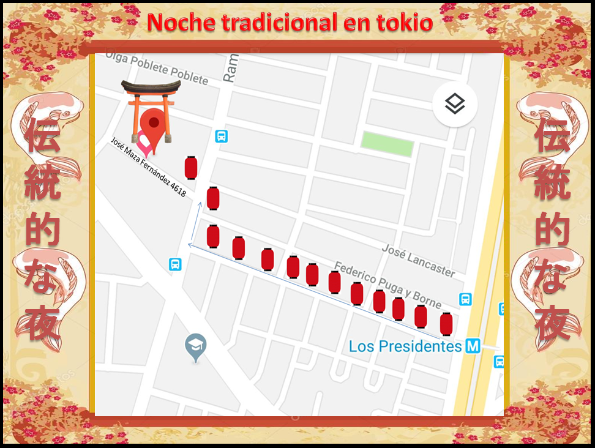

Ve nuestro eventos pasados y los que vienen esta temporada
Fecha: Sábado, 27 de Octubre del 2018 || Horario: 15:00 hr's ~ 21:00 hr's
Avenida Recoleta 594, 8420000 Recoleta, Región Metropolitana de Santiago, República de Chile
Tipo de Entrada: Virtual y Porteria || Valor: $1.000
Bienvenidos a las leyendas de yokai 妖怪モンスター.
¿Te gustan las leyendas japonesas?, te invitamos a ser parte de esta temática legendaria YOKAI.
Regalaremos mascaras de papel temáticas solo 100 primeras personas en llegar.
Contaremos con cine tradicional, las leyendas mas famosas de japon
-Yuki-onna
-Hone-Onna
-Futa-kuchi-onna
-Backbeard
-Hitotsume-kozo
-Rokurokubi
-Kuchisake-onna
-Karakasa Obake
-Jorōgumo
-ohaguro bettari
Fecha: Sábado, 10 de Noviembre del 2018 ~ Domingo, 11 Noviembre del 2018 || Horario: 13:00 hr's ~ 01:00 hr's
Calle José Maza Fernández 4618, 7810000 Macul, Región Metropolitana de Santiago, República de Chile
Tipo de Entrada: Virtual y Porteria || Valor: $2.500
Bienvenidos a una Noche Tradicional en Tokio 伝統的な夜
¿Alguna vez soñaste como seria pasar una noche en Tokio? o ¿En un sector tradicional de Japón?
Te invitamos a pasar una velada en un sector tradicional con:
Gastronomía japonesa, poder beber un trago tradicional como el sake y pasar una noche agradable con buena música.
Este es un evento exclusivo creado para la gente mas amante de la cultura japonesa
Si eres uno de ellos esta es tu oportunidad.
Esta actividad comienza desde las 13:00 PM hasta las 01:00 AM
---------------------------------
Fecha: Domingo, 25 de noviembre de 2018 || Horario: 12:00 hr's ~ 18:00 hr's
Centro Cultural Rojas Magallanes||Estados Unidos 8741, Comuna de La Florida, La Florida
Tipo de Entrada: Virtual y Porteria || ValorPreventa: $1.000 - ValorGeneral: $1.500
Bienvenidos a Expo Asian 中国-日本-韓国
Bienvenidos a un nuevo espacio de cultura tradicional moderna, no solo podrás degustar gastronomía si no también podrás encontrar variedad de productos traídos directamente desde china, japón y corea; además de encontrar tiendas con mucha creatividad y talento, grupos de baile, covers reconocidos, concursos divertidos, talleres de idioma y muchas mas sorpresas y regalos!
No faltes a esta EXPO ASIAN, llena de color y vida!
De gustaciones de licor japonés y cerveza tradicional para mayores de 18 años.
Bebestibles, postres, snacks y más!!
Tendremos un sector para que puedan disfrutar de un entretenido crono-grama.
Fecha: Sábado, 15 de Diciembre del 2018 || Horario: 12:00 hr's ~ 18:00 hr's
Liceo Valentin Letelier - Buenos aires 575, Recoleta, Santiago de Chile
Tipo de Entrada: || Valor: $1.500 (Menores de 10 años no cancelan)
Bienvenidos a Asian Fest Chile アジア料理
Te invitamos a uno de los festivales de cultura asiática ¡más grande de fin de año!
Tienes que transportarte a las maravillas de asía en un solo lugar y disfruta de la variedad en comida tradicional
La música más bella, el ambiente más cálido!
Un gran Festival de gastronomía y feria asiática donde encontraras ambientación japonesa,china y coreana
juegos tradicionales, música instrumental en vivo y más...
Muy pronto información sobre entradas
Fecha: Domingo, 17 de Febrero del 2019 || Horario: 12:00 hr's ~ 19:00 hr's
Centro Cultural Rojas Magallanes||Estados Unidos 8741, Comuna de La Florida, La Florida
Tipo de Entrada: Virtual y Porteria || Valor: $1.500 (Menores de 10 años no cancelan)
Bienvenidos al ASIAN LOVE アジア愛
Bienvenidos a un espacio en donde solo verán amor,amor friki y amor oriental para todos!
podrán participar en todas nuestras actividades,desde concursos para parejas y individuales,premiaremos a cosplayers relacionados a la temática ,cosplay en pareja para hacerlo mas divertido!
tendremos presentaciones de grupos de baile,cantantes con el repertorio mas romántico,tendremos el concurso del ramen del amor! y el ramen picante.
expositores,artistas,música,talleres,presentación de arte marcial,deliciosa comida temática y mucho mas!
recuerden que todos tienen regalo!
Fecha: Sábado, 2 de Marzo del 2019 || Horario: 13:00 hr's ~ 19:00 hr's
Lugar: Por Definir
Tipo de Entrada: Virtual y Porteria || Valor: Gratis
¡VIAJEMOS A JAPÓN POR UN DÍA! vuelve! con la edición de la historia de hiroshima!
La organización de DAIYAMONDO te invita nuevamente a este viaje interactivo basado en la cultura japonesa. Nuestro objetivo es que participes y disfrutes de la historia, magia, cultura y diversión de nuestro querido país del sol naciente pero sólo por un día, es decir, Japón más cerca de ti.en esta nueva oportunidad visitaremos hiroshima! con un festival de sake! si! sake japones!
así que ¡lo celebraremos en grande! por lo que, contaremos con la presencia de personajes infaltables de la cultura japonesa, como son los Samurai, Ninjas, Geishas y Yakuzas que compartirán con el público durante toda la jornada, invitándolos a participar en divertidas actividades, misiones y retos.
Y porque en Japón no solo se come sushi, también tendremos comida tradicional además de los snack y dulces más ricos del país.
Contaremos con la presencia de reconocidos Dojos de diferentes disciplinas de Artes Marciales, además de disfrutar de sus demostraciones.
El licor mas famoso de japón sake de arroz!.
En la parte artística contaremos con demostraciones de arte, danza y juegos tradicionales.
Tendremos un ambiente hermoso y colorido con los clásicos peces koi y nuestra sección infantil para los más pequeños.
¡Les esperan muchas sorpresas! Recuerden es una actividad para toda la familia.
Y no olviden cruzar nuestro gran tori de madera!
No te lo pierdas.